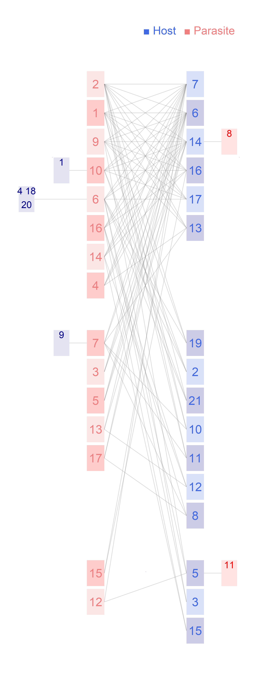

Network: RA_HP_037

Host 1 Amalaraeus arvicolae, 2 Amalaraeus penicilliger, 3 Amphipsylla rossica, 4 Atyphloceras nuperus, 5 Ceratophyllus sciurorum, 6 Ctenophthalmus agyrtes, 7 Ctenophthalmus assimilis, 8 Ctenophthalmus bisoctodentatus, 9 Ctenophthalmus obtusus, 10 Ctenophthalmus solutus, 11 Ctenophthalmus uncinatus, 12 Doratopsylla dasycnema, 13 Hystrichopsylla orientalis, 14 Megabothris turbidus, 15 Palaeopsylla kohauti, 16 Palaeopsylla soricis, 17 Peromyscopsylla bidentata, 18 Peromyscopsylla silvatica, 19 Rhadinopsylla integella, 20 Rhadinopsylla isacantha, 21Rhadinopsylla pentacantha
Parasite
1 Apodemus agrarius, 2 Apodemus flavicollis, 3 Apodemus sylvaticus, 4 Apodemus uralensis, 5 Arvicola terrestris, 6 Clethrionomys glareolus, 7 Crocidura leucodon, 8 Micromys minutus, 9 Microtus arvalis, 10 Microtus subterraneus, 11 Muscardinus avellanarius, 12 Myoxus glis, 13 Neomys anomalus, 14 Neomys fodiens, 15 Sorex alpinus, 16 Sorex araneus, 17Talpa europaea
Hadfield JD, Krasnov BR, Poulin R, Shinichi N (2013) A tale of two phylogenies: comparative analyses of ecological interactions. The American Naturalist 183(2): 174-187 Slovakia